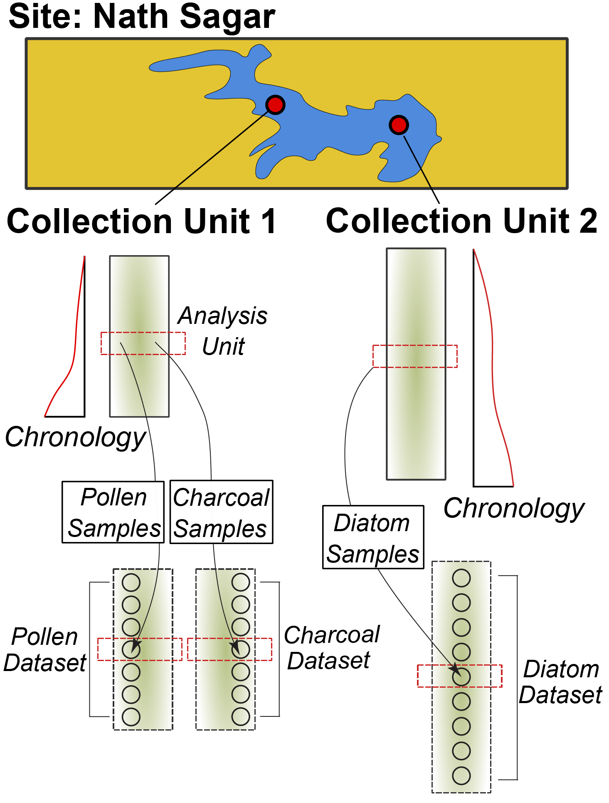

Flujo de Trabajo Simple
Introducción
El objetivo de este documento es mostrar como usar el paquete de R para la base de datos Neotoma, neotoma2.
La librería neotoma2 está disponible en GitHub y actualmente la documentación sólo está en inglés - trabajamos para tenerla en español próximamente.
Antecedentes
Entendiendo la estrucura de Neotoma
Los datos en la base de datos de Neotoma están organizados como un conjunto de relaciones conectadas que permiten representar los distintos elementos de un análisis paleoecológico:
- Espacio y tiempo:
- ¿Dónde está ubicada una muestra (latitud y longitud)?
- ¿A qué profundidad fue tomada dentro de un perfil estratigráfico?
- ¿Qué edad estimada tiene esa muestra?
- ¿Qué edad tienen los elementos encontrados dentro o cerca de esa muestra?
- Observaciones:
- ¿Qué se está contando o midiendo?
- ¿Qué unidades se están usando?
- ¿Quién lo observó?
- Métodos científicos
- ¿Qué modelo estadístico se usó para calcular la edad?
- ¿Qué tipo de incertidumbre se consideró para describir esa observación?
- Modelos conceptuales de datos
- ¿Cómo se relacionan las observaciones dentro de una muestra con otras muestras de la misma colección?
- ¿Cómo se vincula una observación fósil con especies actuales o extintas relacionadas?
La paleoecología es un campo amplio y en constante evolución por lo que estas relaciones pueden ser bastante complejas. Por eso, la base de datos está altamente estructurada y normalizada, lo que permite agregar nuevos conocimientos sin afectar el modelo de datos central.
Si quieres profundizar en cómo está organizada la base de datos, puedes leer el Manual de la base de datos de Neotoma o revisar directamente el esquema del modelo relacional.
Estructura de Datos en Neotoma

En Neotoma, los datos se asocian a sitios – ubicaciones específicas con coordenadas de latitud y longitud.
Dentro de un sitio, puede haber una o más unidades de colecta – que son los puntos específicos donde se recolectan físicamente las uestras dentro del sitio. Por ejemplo:
- Una cueva es un sitio que puede tener más de una colección, con entidades específicas (espeleotemas)
- Un sitio arqueológico puede tener una o más colecciones, como pozos dentro de una excavación.
- Un sitio de muestreo de polen puede tener varias colecciones – es decir, diferentes núcleos dentro de la cuenca del lago.
- Una ciénaga es un sitio que puede tener diversas colecciones – una transecta con varias muestras de superficie.
Las unidades de colección pueden tener coordenadas GPS de mayor resolución que el sitio general, pero siguen considerándose parte del mismo sitio.
Los datos dentro de una colección son recopilados a partir de diferentes unidades de análisis, por ejemplo:
- Todo el sedimento a 10cm de profundidad en un perfil de corte (la colección) a lo largo de un lago meándrico (el sitio) es una unidad de análisis;
- Todo el material en una muestra de superficie (colección) tomada de una ciénaga (el sitio) es una unidad de análisis;
- Todos los restos fósiles en una capa enterrada de huesos (colección) en una cueva (el sitio) también forman una unidad de análisis.
Los datos recolectados en una unidad de análisis se agrupan según su tipo de conjunto de datos (carbón, diatomeas, dinoflagelados, etc.) y se organizan como una muestra. El conjunto de muestras de una colección para un tipo de datos determinado se asigna a un conjunto de datos.
- Una muestra puede ser todas las diatomeas (conjunto de datos) extraídas del sedimento a 12 cm de profundidad (unidad de análisis) en un núcleo (colección) de un lago (el sitio).
- Otra muestra puede ser el registro de un solo hueso de mamut (muestra y unidad de análisis, tipo de datos: vertebrados) encontrado en la ribera de un río (sitio y unidad de colección).
Estructura de Datos en neotoma2

plotLeaflet() puede ser utilizada en un objeto de la clase sites.Si observamos el diagrama UML podemos observar que la estructura de datos en el paquete neotoma2 refleja la estructura original de la base de datos.
Como veremos en la sección Búsqueda de Sitios, podemos buscar estos objetos y empezar a trabajar con ellos (en la sección Análisis Simple).
Un punto que debemos tener en cuenta, en el paquete neotoma2, la mayoría de los objetos son de la clase sites , que contienen mayor o menor información. Hay diferentes funciones que operan sobre sites. Cuando queremos obtener mayor información sobre los sitios sites, utilizamos las funciones get_datasets() o get_downloads() que pueblan con mayor información los sitios.
Búsqueda de sitios
get_sites()
Hay diferentes maneras de encontrar sitios en neotoma2. Debémos pensar en los sitios como objetos espaciales. Tienen nombre, ubicación y pueden ser encontrados bajo en contexto de unidades geopolíticas. Sin embargo, bajo el contexto de la API y del paquete de R, los sitios en sí mismos no contienen datos sobre la taxonomía, el grupo de datos o las edades. Simplemente es un contenedor al que le podemos agregar más información. Es así que cuando buscamos por sitio, lo hacemos usando los siguientes atributos (en inglés):
| Parámetro | Descripción |
|---|---|
| sitename | Un nombre válido, usando % como comodín. |
| siteid | Un identificador numérico único del sitio en la base de datos de Neotoma. |
| loc | Un vector de caja delimitadora, GeoJSON o cadena WKT. |
| altmin | Límite inferior de altitud para los sitios. |
| altmax | Límite superior de altitud para los sitios. |
| database | La base de datos específica de donde se extraen los registros. |
| datasettype | El tipo de conjunto de datos (ver get_tables(datasettypes)). |
| datasetid | Identificador numérico único del conjunto de datos en Neotoma. |
| doi | Un DOI válido para un conjunto de datos en Neotoma. |
| gpid | Un ID numérico único o cadena de texto que identifica una unidad geopolítica. |
| keywords | Palabras clave únicas para muestras registradas en Neotoma. |
| contacts | Un nombre o ID numérico de personas asociadas con los sitios. |
| taxa | IDs numéricos únicos o nombres de taxones asociados con los sitios. |
Nombre del sitio: sitename="%Lago%"
Hay ocasiones en las que sabremos exactamente el nombre del sitio que estamos buscando (“Lago Titicaca”), y habrà ocasiones en las que tendremos una idea aproximada sobre el nombre (por ejemplo, sabemos que el nombre es parecido a “Lago Titicaca”, o “Lake Titicaca”, pero no estamos seguros de como fue ingresado a la base de datos).
De forma general, utilizamos el formato: get_sites(sitename="XXXXX") para buscar un sitio por nombre.
PostgreSQL (y la API) utilizan el signo de porcentaje como comodín. De esta forma, "%Titicaca%" seleccionará “Lake Titicaca” y en caso de existir, también seleccionaría “Lago Titicaca” y “Pantano Titicaca”. La búsqueda tampoco distingue entre mayúsculas y minúsculas, por lo que simplemente podría escribir "%titicaca%".
Código
{web-r sitename, eval=FALSE} library(neotoma2) lago_titicaca <- neotoma2::get_sites(sitename = "%titicaca%") plotLeaflet(lago_titicaca)
Resultados
{web-r sitenamePlot, echo=FALSE} lago_titicaca <- neotoma2::get_sites(sitename = "%titicaca%") plotLeaflet(lago_titicaca)
Ubicación: loc=c()
El paquete neotoma utilizaba un cuadro delimitador para buscar por ubicación. El cuadro estaba estructurado como un vector con valores de latitud y longitud: c(xmin, ymin, xmax, ymax). En neotoma2 se puede utilizar esta misma caja delimitadora o podemos definir objetos espaciales más complejos con el paquete sf. El paquete sf nos permite trabajar con datos ráster y polígonos en R, para seleccionar sitios existentes en objetos espaciales más complejos. El parametro loc trabaja con vectores simples, objetos WKT, objetos geoJSON y objectos sf en R. Notar que el paquete neotoma2 es un función contenedora API que utiliza un URL (api.neotomadb.org).
Buscar sitios utilizando una ubicación. En el siguiente código hay tres representaciones de Sudamérica: geoJSON, WKT y con un cuadro delimitador. También hemos transformado el elemento sa$geoJSON a un objeto del paquete sf. Podemos utilizar cualquiera de estas cuatro representaciones para trabajar con el paquete neotoma2.
sa <- list(geoJSON = '{"type": "Polygon",
"coordinates": [[
[-79.66, -5.97],
[-70.06, -19.07],
[-74.38, -55.59],
[-34.67, -6.52],
[-76.41, 8.37],
[-79.66, -5.97]
]]}',
WKT = 'POLYGON ((-79.66, -5.97,
-70.06, -19.07,
-74.38, -55.59,
-34.67, -6.52,
-76.41, 8.37,
-79.66, -5.97))',
bbox = c(-79.66, -55.59, -34.67, 8.37))
sa$sf <- geojsonsf::geojson_sf(sa$geoJSON)
sa_sites <- neotoma2::get_sites(loc = sa$sf, all_data = TRUE)Puedes siempre hacer un gráfico de los sites obtenidos con plot(), pero los datos perderan el contexto geográfico. La función plotLeaflet() regresa un mapa de la librería leaflet() y permite mayor personalización o agregar datos espaciales adicionales (como nuestro cuadro delimitador, sa$sf, que funciona directamente con el paquete leaflet):
Código
{web-r plotL, eval=FALSE} neotoma2::plotLeaflet(sa_sites) %>% leaflet::addPolygons(map = ., data = sa$sf, color = "green")
Resultados
{web-r plotLeaf, echo=FALSE} neotoma2::plotLeaflet(sa_sites) %>% leaflet::addPolygons(map = ., data = sa$sf, color = "green")
Auxiliares para objetos de tipo Sitios
Si observamos al diagrama UML para los objetos de neotoma2 podemos ver que hay un conjunto de funciones qeu operan a nivel de sites (sitios). Conforme vamos agregando información a los objetos sites mediante las funciones get_datasets() o get_downloads(), podemos utilizar un mayor número de funciones auxiliares. Podemos así, tomar ventaja de funciones como summary() para tener un mejor entendimiento de los diferentes tipos de datos que tenemos en este conjunto de sitios. El código a continuación regresa la tabla de resumen. Hacemos después un poco de magia con R para cambiar el formato en que los datos están siendo representados (convirtiéndolo a un objeto datatable()), pero la pieza principal es la llamada a la función summary().
Código
{web-r summary_sites, eval=FALSE} neotoma2::summary(sa_sites) %>% DT::datatable(data = ., rownames = FALSE, options = list(scrollX = "100%", dom = 't'))
Resultados
{web-r summarySitesTable, eval=TRUE, echo=FALSE} neotoma2::summary(sa_sites) %>% DT::datatable(data = ., rownames = FALSE, options = list(scrollX = "100%", dom = 't'))
Podemos ver que no hay cronologías asociadas con el objeto sites. Esto es porque, por el momento, no hemos extraído la información necesaria de los dataset. Todo lo que sabemos, tras la llamada get_sites() son los tipos de conjuntos de datos con los que contamos.
Búsqueda de conjuntos de datos (get_datasets()):
Sabemos que las colecciones y los conjuntos de datos están contenidos en los sitios. Similarmente, un objeto de tipo sites contienen collectionunits que contienen datasets. En la tabla anterior podemos ver que algunos de los sitios contienen registros de diatomeas. Dicho esto, solo tenemos la información de sites, pero por conveniencia, la API devuelve información adicional sobre los conjuntos de datos lo que nos permite navegar de manera más fácil los registros.
Con un objeto sites podemos llamar directamente a la función get_datasets(), que nos permitirá extraer metadatos sobre los conjuntos de datos. Podemos utilizar la función datasets() en cualqueir momento para obtener más información de los conjuntos de datos que un objeto sites pueda contener. Comparemos la información impresa datasets(sa_sites) contra una llamada similar utilizando el siguiente código.
Código
```{web-r datasetsFromSites, eval=FALSE} sa_datasets <- neotoma2::get_datasets(sa_sites, all_data = TRUE)
datasets(sa_datasets)
#### Resultados
```{web-r datasetsFromSitesResult, echo=FALSE, message=FALSE}
sa_datasets <- neotoma2::get_datasets(sa_sites, all_data = TRUE)
datasets(sa_datasets) %>%
as.data.frame() %>%
DT::datatable(data = .,
options = list(scrollX = "100%", dom = 't'))Filtrar Registros con filter()
Si decidimos únicamente obtener registros de un sólo tipo de datos, o si requerimos de mayor filtración, debemos considerar filtrar antes de descargar todos los datos y muestras. Para ello, utilizaremos la función filter(). Por ejemplo, si requerimos únicamente los registros de polen con sus cronologías conocidas, podemos filtrar de la siguiente forma:
Código
```{web-r downloads, eval=FALSE} sa_diatom <- sa_datasets %>% neotoma2::filter(datasettype == “pollen” & !is.na(age_range_young))
neotoma2::summary(sa_diatom)
#### Resultados
```{web-r downloadsCódigo, echo = FALSE}
sa_diatom <- sa_datasets %>%
neotoma2::filter(datasettype == "pollen" & !is.na(age_range_young))
neotoma2::summary(sa_diatom) %>% DT::datatable(data = .,
options = list(scrollX = "100%", dom = 't'))Podemos ver qeu la tabla de datos se ve diferente y que hay un número menor de sitios.
Obteniendo las muestras con sample().
Debido a que los datos de las muestras agregan mucha sobrecarga (para Sudamérica, los datos de polen sobrecargara nuestro sites object más que 20 veces), por eso llamamos la función get_downloads() después de haber hecho un filtrado preliminar. Después de get_datasets(), tenemos información sufciente para filtar basados en ubicación, límites de tiempo y tipo conjunto de datos. Cuando ejecutamosget_downloads() podemos hacer un filtrado más fino a nivel de unidad de análisis o nivel de taxón.
El siguiente comando puede tomar algo de tiempo. Por eso, hemos guardado el resultado en un archivo RDS. Puedes intentar correr este comando por tu cuenta o puedes cargar el archivo RDS.
## This line is commented out because we've already run it for you.
##sa_dl <- sa_diatom %>% get_downloads(all_data = TRUE)
sa_dl <- readRDS('data/saDownload.RDS')Una vez que hemos hecho la descarga, ahora tenemos información de cada sitio asociado a las unidades de colecta, los tipos de conjunto de datos, y a todas las muestras asociadas a estos conjuntos. Para extraer toda las muestras, utilizamos la función samples:
allSamp <- samples(sa_dl)Una vez hecho esto, obtenemos un data.frame esto es una tabla con nrow(allSamp) renglones y ncol(allSamp) columnas. La razón de que esta tabla sea muy larga es porque estamos obteniendo los datos en un formato largo. Cada rengón contiene toda la información que se necesita para interpretarse correctamente:
{web-r colNamesAllSamp, echo = FALSE} colnames(allSamp)
Para algunos tipos de conjunto de datos o análisis específicos, algunas columnas podrán no ser necesarias. Sin embargo, para otros conjuntos de datos pueden ser críticamente importantes. Para permitir que el paquete neotoma2 sea lo más útil posible para todos los usuarios, hemos incluido todas las columnas posibles.
Extracción de taxones
Si quieres saber que taxones existen en los registros, puedes utilizar la función taxa() en el objeto sites. La función taxa() regresa los taxones únicos junto con dos columnas adicionales sites y samples que indican en cuantos sitios y en cuantas muestras el taxón aparece, esto nos ayuda a comprender mejor que tan común es cada taxón individual.
Código
{web-r taxa2, eval=FALSE} neotomatx <- neotoma2::taxa(sa_dl)
Resultados
```{web-r taxaprint, echo=FALSE, message=FALSE} neotomatx <- neotoma2::taxa(sa_dl)
neotoma2::taxa(sa_dl) %>% DT::datatable(data = head(neotomatx, n = 20), rownames = FALSE, options = list(scrollX = “100%”, dom = ‘t’))
#### Entendiendo las Taxonomías en Neotoma {-}
Las taxonomías en Neotoma no siempre son tan directas como podríamos pensar. La identificación taxonómica en paleoecología puede ser compleja y verse influenciada por la morfología del organismo, el estado de conservación del palinomorfo, la experiencia del/la analista, entre otros factores. Puedes leer más sobre este tema en la sección sobre [Conceptos Taxonómicos del Manual de Neotoma](https://open.neotomadb.org/manual/database-design-concepts.html#taxonomy-and-synonymy).
En la base de datos utilizamos identificadores únicos (por ejemplo, `taxonid`, `siteid`, `analysisunitid`) porque nos permiten conectar los distintos registros entre sí. Los valores de `taxonid` que devuelve la función `taxa()` se pueden vincular con la columna `taxonid` en la tabla que devuelve `samples()`. Esto nos permite, por ejemplo, crear tablas de armonización taxonómica si lo necesitamos.
También notarás que el nombre del taxón (`taxonname`) aparece en el campo `variablename`. En Neotoma, los conteos individuales de muestras se reportan como [`variables`](https://open.neotomadb.org/manual/taxonomy-related-tables-1.html#Variables). Una "variable" puede representar una especie, una medición de laboratorio o incluso un proxy no orgánico, como carbón (charcoal) o mediciones de fluorescencia de rayos X (XRF). Estas variables incluyen tanto la unidad de medida como el valor correspondiente.
## Análisis Simples
### Trazado Estratigráfico
Podemos utilizar paquetes como `rioja` para hacer trazados estratigráficos para un único registro. Pero primero tenemos que hacer un manejo de datos diferente. A pesar de que podríamos hacer armonización nuevamente, vamos a tomar los 10 taxones más comúnes en un sitio dado los trazaremos en un diagrama estratigráfico.
Utilizaremos la función `arrange()` para ordenar confrome al número de veces que un taxón aparece en un núcleo. De esta forma, podemos tomar las muestras y seleccionar los taxones que aparecen en las diez primeras filas del marco de datos `plottingTaxa`.
```{web-r stratiplot, message = FALSE}
plottingSite <- sa_dl[[1]]
plottingTaxa <- taxa(plottingSite) %>%
filter(ecologicalgroup %in% c("DIAT")) %>%
filter(elementtype == "valve") %>%
arrange(desc(samples)) %>%
head(n = 10)
# Limpiar y seleccionar records de polen .
# Repetir filtros para polen & grupos ecologicos en las muestras
shortSamples <- samples(plottingSite) %>%
filter(datasettype == "pollen")
# Select only pollen measured using NISP and convert to a "wide"
# table, using proportions. The first column will be "age".
# This turns our "long" table into a "wide" table:
values <- plottingSite[[2]] %>%
samples() %>%
toWide(ecologicalgroup = c("ITOP"),
unit = c("per mille"),
groupby = "age",
elementtype = NA,
operation = "sum") %>%
arrange(age) %>% na.omit()Aparentemente, esto es una llamada compleja de comandos. Sin embargo, la función toWide() proporciona control sobre los taxones, unidades y otros elementos para que puedan ser ingresados en una matriz (depth x taxon) que muchas herramientas estadísticas como los paquetes vegan o rioja usan.
Para crear gráficas, podemos usar strat.plot() del paquete rioja, ordenar los taxones usando puntajes promedio ponderados (wa.order). También se ha agregado un gráfico CONISS al borde del gráfico, para mostrar cómo funciona el nuevo marco de datos amplio con funciones métricas de distancia.
```{web-r plotStrigraph, message=FALSE, warning=FALSE} clust <- rioja::chclust(dist(sqrt(counts)), method = “coniss”)
plot <- rioja::strat.plot(counts[,-1] * 100, yvar = counts\(age, title = sa_dl[[1]]\)sitename, ylabel = “Calibrated Years BP”, xlabel = “Diatom (%)”, y.rev = TRUE, clust = clust, wa.order = “topleft”, scale.percent = TRUE)
rioja::addClustZone(plot, clust, 4, col = “red”)
### Análisis Multi-proxy {.tabset}
#### Code
```{web-r sillyplot, eval = FALSE}
spSamp <- allSamp %>%
filter(ecologicalgroup %in% c('TRSH', 'ITOP')) %>%
filter(units %in% c('per mille', 'NISP'))
spPct <- spSamp %>%
group_by(sitename, depth) %>%
mutate(val = ifelse(units == 'NISP', value / sum(value), value)) %>%
ungroup() %>%
filter(variablename %in% c('δ13C', 'δ18O', 'Pinus')) %>%
filter(!agetype == 'Calendar years AD/BC')
ggplot(spPct, aes(x = val, y = age, color = sitename)) +
theme(legend.position="none") +
geom_path() +
facet_wrap(~variablename, scale = 'free_x') +
coord_cartesian(ylim = c(0, 10000))
Results
```{web-r sillyploteval, warning = FALSE}
spSamp <- allSamp %>% filter(ecologicalgroup %in% c(‘TRSH’, ‘ITOP’)) %>% filter(units %in% c(‘per mille’, ‘NISP’))
spPct <- spSamp %>% group_by(sitename, depth) %>% mutate(val = ifelse(units == ‘NISP’, value / sum(value), value)) %>% ungroup() %>% filter(variablename %in% c(‘δ13C’, ‘δ18O’, ‘Pinus’))
ggplot(spPct, aes(x = val, y = age)) + theme(legend.position=“none”) + geom_path() + facet_wrap(~variablename, scale = ‘free_x’) + ylim(c(0, 10000))
## Conclusion
Hemos hecho muchas cosas en este ejemplo.
- Buscamos sitios utilizando nombres y parámetros geográficos.
- Filtramos resultados utilizando parámetros espaciales y temporales.
- Obtuvimos información de las muestras de los conjuntos de datos seleccionados.
- Hicimos un análisis estratográfico básico.
¡Esperamos que utilizen estos ejemplos como un bloque para usar en el futuro en su trabajo o para algo nuevo y divertido!
## Apéndice
### Instar librerías en computadora local {#localinstall}
Utilizamos varios paquetes en este documento, particularmente `leaflet`, `sf`, `rioja` entre otros. Podemos utilizar `pacman` para cargar las librerías e instalar aquellas que aún no se encuentren en su sistema.
```{web-r setupFake, eval=FALSE}
options(warn = -1)
pacman::p_load(neotoma2, dplyr, ggplot2, sf, geojsonsf, leaflet, terra, DT, readr, stringr, rioja)Toma en cuenta que R es sensible al orden en que las librerías son cargadas. Si utilizamos el prefijo neotoma2:: le diremos explícitamente a R que queremos utilizar una función de la librería neotoma2 para ejecutar una función en particular. Esto es porque hay funciones como filter() que existen en mas librerías como dplyr. En algunas ocaciones puedes encontrar estos errores:
Error in UseMethod("filter") :
no applicable method for 'filter' applied to an object of class "sites"en este caso, lo más probable es que al ejecultar filter() R no sabe que debe utilizar neotoma2 y está utlizando dplyr. Agregando explícitamente dplyr:: o neotoma2:: frente a la función (i.e., neotoma2::filter()) es una buena práctica y R entenderá a que función nos referimos.
Pipas en R
Las pipas o pipes en R son una forma de encadenar funciones. Generalmente, se puede utilizar los operadores: |> or %>%. |> es nativo en R y %>% viene del ecosistema tidyverse en R. En neotoma2 usamos %>%.
Este operador es muy útil pues funciona como una tubería que lleva agua de un lugar a otro. En programación, es como una línea de montaje donde los datos entran por una función, se modifican y el resultado es ingresado a la siguiente función. Esto hace que el código sea legible y más facil de escribir. También reduce el número de variables que se necesitan, ahorrando espacio en memoria.
Por ejemplo, sin los pipes en neotoma2 para extraer un sitio y luego crear la gráfica haríamos:
# Retrieve the site
plot_site <- neotoma2::get_sites(sitename = "%ø%")
# Plot the site
neotoma2::plotLeaflet(object = plot_site)Es decir, primero creamos la variable plot_site que sólo utilizaríamos una vez pero que fue necesaria para poder ejecutar la función plotLeaflet.
Con la pipa (%>%) no necesitamos crear la variable, simplemente escribimos nuestro código. Así plotLeaflet() no requiere un argumento object porque utiliza la respuesta generada por get_sites(sitename = "%ø%").
2.2.3.1. Code
{web-r piping code, eval=FALSE} # get_sites and pipe. The `object` parameter for plotLeaflet will be the # result of the `get_sites()` function. get_sites(sitename = "%ø%") %>% plotLeaflet()>
2.2.3.2. Result
{web-r piping result, echo=FALSE} # get_sites and pipe get_sites(sitename = "%ø%") %>% plotLeaflet()